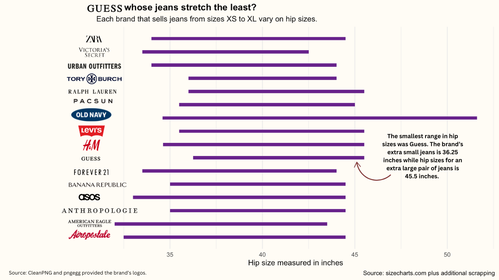

To slip into a new pair of size double zero jeans felt like an achievement, said Aleena Ahmed, a resident of New Jersey.
“I didn't even want to take the tag off,” she said about her American Eagle jeans. “It was like a marker of 'I did it.'”
Perhaps it was her slim tall Barbie dolls growing up or the eruption of skinny beauty standard posts titled “Thinspo” on Tumblr, but Ahmed said she would eat less to be thinner. New clothes could monitor the progress.
So when the double zero jeans from Old Navy didn't fit, even though the ones from American Eagle did, Ahmed said it tripped her out and made her “feel unattractive.”
Different jean sizes fitting Ahmed is an example of vanity sizing, where clothing brands label their clothes smaller than they actually are.
After finding a range of brands from sizecharts.com and scraping each of these brand's sizes from their respective websites, I found brands like Guess, Ralph Lauren and Tony Burch had a smaller range of jean sizes compared to Old Navy.

Sizes are often categorized as small, medium, large and extra large, with plus sizes, petite sizes and tall sizes having separate measurements. Jean sizes for the majority of the brands I scraped traditionally follow a size zero to size 16 range, but for the sake of consistency, I am using letter sizing for my analysis.
To clarify, identifying sizes through letters or numbers do not impact the data as they are just variables. It is what we categorize as a small or size two that varies.
Jean sizes are not the only culprit to vanity sizing. Women's tops require measuring the bust in inches or centimeters. As seen in the interactive chart below, for over 100 brands, a bust measurement for an XL top ranges from 38.5 inches to 47 inches.
According to the Centers for Disease Control and Prevention, the average waist size for women is 38.7 inches. Majority of the brands in this dataset categorize this average waist size as large or even extra large. One-size-all stores like Brandy Melville, who refused to give me their size chart, sell jeans with an average waist size of only 30 inches.
Most of the brands having the smaller sizes within the small, medium, and large size categories were popular fast fashion brands like Zara, Forever 21, Fashion Nova and Aeropostale.
With no universal size guide, brands design their own to cater to their audience and make consumers feel good picking up clothing as size small, said Patience Billingsley, a graduate of the University of Arkansas, where she conducted research on vanity sizing.
Billingsley called vanity sizing unethical and said it is manipulating to tell customers a size they are not.
The variety in what constitutes a “small” waist or “large” bust in clothes makes the concept of what our sizes are irrelevant, Ahmed said.
For vanity sizing to be so inconsistent but be a persistent thought for Ahmed is what hurts the most, she said.
“I want my life to be bigger,” Ahmed told me. “This is the physical body I have and I want my life to be about other things.”